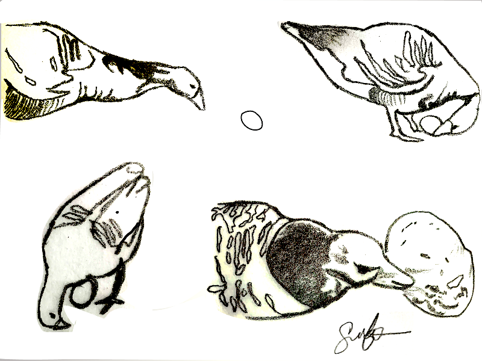

CH 1Other Minds
The problem is not that we see too few minds, it is that we see too many
The standard setup. My mind is private. I have direct access to it and to nothing else. Everything I know about you comes through your body: your words, your face, where you look. So my belief that you are conscious is the conclusion of an argument, and a sceptic is entitled to ask to see the argument.
Andrews grants the setup and denies what people draw from it. If the inference were shaky we would expect infants to be born solipsists who reason their way to other people. Babies do the opposite. They arrive treating others as agents, distinguishing a thing that moves itself from a thing that is pushed. Human and chimpanzee infants both copy an adult who sticks out her tongue.
And adults over-attribute, demonstrably. In 1944 Fritz Heider and Marianne Simmel showed people an animation of two triangles and a circle moving around a screen. Viewers described a plot, and some told a story about two males fighting over a female. Nothing was there except shapes with no faces and no bodies.
The same mechanism is now used deliberately. Animators give a desk lamp a hop and viewers read it as eager. A robot seal called Paro is stroked in care homes and treated as a creature that likes the residents. Hiroshi Ishiguro's robot Erica looks and behaves like a woman in her twenties and has been lined up to read the news in Japan.
None has a mind. All switch on the detector, which is the evidence that it is loose.
So the problem changes shape. If the default is to see agency everywhere, the risk is over-ascription, and the job of the arguments is to say which of the things we already treat as minded really are. Andrews calls it combating animism in place of combating solipsism.
Which is why she still needs the arguments. A tendency to believe something is no reason to think it true, and plenty of clever philosophers have denied animals minds.
Four theories of what a mind is, and why functionalism is the one that lets an octopus in
Andrews refuses to give a definition and gives a map instead. The split at the top is between dualists and monists.
| Position | What it says | What it means for animals |
|---|---|---|
| Substance dualismDescartes | Mind is a thing made of mental stuff; the body and brain are things made of physical stuff. Two separate substances. | An animal either has the extra substance or does not, with nothing in between. Descartes said it does not. |
| Property dualism | Only physical stuff exists, and it can carry two kinds of attribute: physical ones such as shape, mental ones such as consciousness. | Leaves room for degrees, since an organism might carry some mental properties and lack others. |
| Identity theorya monism | The mind is the brain. Mental states are brain states. | Ties mind to one kind of organ, so a creature built differently is in trouble. |
| Functionalisma monism, and the majority view | A mental state is defined by what it does, by its role in the system. It can be multiply realised, run on different hardware. | The friendliest to animals. A fish with no neocortex can be in pain if the state plays the pain role. |
| Enactivisma monism | Mind depends on the whole living body and its environment, and is part of an ongoing interaction with the world. | Mind goes wherever life and an environment interact, which is generous and hard to test. |
Why substance dualism is treated as dead here. It violates the causal closure of the physical world, the principle that every physical event has a physical cause. If a non-physical mind moves an arm, something physical happened with no physical cause.
Functionalism is the live one, and the reason is the fish. Human pain runs through the neocortex and fish have no neocortex. On identity theory that settles it. On functionalism the question is whether some state in the fish does the job pain does, which can be investigated.
The same program runs on a laptop and on a phone, and nothing about the program is made of the metal. If a mental state is like that, then asking what an animal's brain is made of is the wrong question, and asking what its states do is the right one.
Flexible behaviour is the test actually used, and two famous animals fail it
They narrow it to cognition. Cognition is the processing between what comes in through the senses and what the animal does: memory, navigation, problem solving, reasoning, language. It is what lets you recognise a friend's face or ski down a hill.
And the marker of cognition is flexibility: doing different things in similar situations, and changing after experience. Two standard cases show the opposite.
- The greylag goose and the golf ball. An egg displaced from the nest is rolled back with the underside of the beak. Put a golf ball, a doorknob or an egg four times the right size at the edge of her nest and she rolls that in too. Tinbergen and Lorenz called this a fixed action pattern: a motor program triggered by anything close enough to the right shape. She needs no concept of egg, and she cannot help it.
- Pavlov's dogs. A dog trained with a bell before food will salivate at the bell. That is genuine learning, because the behaviour changed with experience. It is still inflexible, because once learned the dog cannot decide to withhold it.
Set against a human case. Suchi usually takes the subway and on a warm spring day takes her bike, and can say why. Andrews locks herself out, climbs onto the porch roof and pushes in a window screen. Different action, same goal, no training for it.

Three philosophers said no and three said yes, and the disagreement is about two different things
The denials, in order.
- Aquinas, thirteenth century. In the Summa Theologica he asks whether killing animals is wrong and answers no: they are devoid of the life of reason and are moved by natural impulse, as if by another. The tell is his example. Killing another man's ox is a sin of theft, and the wrong is done to the owner.
- Kant, eighteenth century. Animals have desires, which is a mental property, and are driven by them with no ability to ask whether a desire should be followed. Having no way to reason about their own reasons, they are not persons and have no value as ends. Kant still says to treat them well, because a man cruel to animals becomes hard in his dealings with men.
- Descartes, seventeenth century. The strongest version. Only language users think.
There is no other animal at all, however perfect and pedigreed it may be, that does the like. This does not happen because they lack the organs, for one sees that magpies and parrots can utter words just as we can, and yet they cannot speak as we do, that is to say, by testifying to the fact that they are thinking about what they are saying.
Read what he does with the counterexamples. Parrots have the organs and still do not speak, so the problem is inside. Deaf people without speech invent signs, so they do think. His conclusion is that animals have no reason at all, and that an animal is an automaton.
The replies. Voltaire went at the facts. The bird builds a semicircular nest against a wall, a quarter circle in a corner and a full circle in a tree. The hunting dog knows more after three months of training than before. The canary makes a mistake and corrects itself.
Hume refused to argue. No truth, he wrote, appears more evident than that beasts are endowed with thought and reason as well as man, and the arguments are so obvious that they never escape the most stupid and ignorant.
Now the move that makes this section philosophy and not a list. Voltaire and Descartes are disagreeing about two separate things at once, and the two are tangled.
| Kind of claim | Descartes | Voltaire |
|---|---|---|
| Theoreticalwhat mind requires | Language | Accepts that rational behaviour is what matters |
| Empiricalwhat animals do | Repeat fixed behaviour | Learn, solve problems, correct themselves |
And the theory decides what counts as evidence. Given Descartes's commitment, it would not matter if the canary composed flute tunes or the bird built a house of bricks. No talk, no mind. This is the trap the rest of the course keeps returning to: a prior commitment that disqualifies the data in advance cannot be refuted by data.
The argument from analogy, which has a reference class of one
The schema.
- I have property M and I have a mind.
- Other humans have property M.
- So other humans probably have minds.
It is an inductive argument, and a terrible one. Its strength depends on the sample, and this sample has one member: me. Generalising to seven billion people from one observed case is an inference nobody accepts anywhere else.
In a deductive argument, true premises guarantee a true conclusion. Such an argument is called valid.
An inductive argument offers evidence and stops short of a guarantee, so its conclusion can be false with every premise true. No such argument is valid. It counts as strong or weak according to how much support it supplies.
There is a second hole, and it is the interesting one. Which property counts as M? One of Andrews's properties is being a woman, and gender has nothing to do with having a mind. So the analogy needs a separate argument saying why the chosen property is relevant, and that separate argument is a theory of mind. John Stuart Mill's version picks the causal link between behaviour and mind as the reference property, which pushes the work back onto the theory.
Applied to animals it gets better and worse at the same time. The animal version runs: all humans with minds have M, members of species A have M, so members of species A probably have minds. The sample is now seven billion, which is a real improvement. The analogy itself is now worse, because for most species you can list more differences than similarities. Something that lives underwater, perceives by echolocation, lives three weeks or is eusocial with sterile worker castes is far enough from a human that the comparison carries almost nothing.
Evolutionary parsimony, which works for chimpanzees and fails for octopuses
The idea. Treat mentality as an evolved trait, like eye colour or stripes. The closer a species is to us on the family tree, the likelier it is that a behaviour we share has the same cause in both.
Frans de Waal's version is methodological. In biology, assume that similar behaviour in closely related organisms has similar causes. Deny that and you are claiming that evolution built separate machinery to produce the same result, which is extra entities for no reason. The exception is convergent evolution, where a trait arises twice in distant lineages, like the wing of a bat and the wing of a bee. Where two species are close and share the behaviour, the first hypothesis is the shared cause. If the human cause is mental, the chimpanzee cause is mental.
Elliott Sober builds it on the common ancestor.
- Humans and chimpanzees both perform behaviour B.
- In humans, B is caused by mental states.
- B could be caused by mental states M or by some non-mental process N.
- The most recent common ancestor performed B.
- The more parsimonious explanation requires the fewest changes between ancestors and descendants.
- So it is more parsimonious that the ancestor did B using M.
- So it is more parsimonious that chimpanzees do B using M.
What parsimony means here is specific: the explanation requiring the fewest changes along the branches of the tree. The alternative, that mental states cause the behaviour in us while a different mechanism causes it in them, needs a change in the lineage that nothing else calls for.
Sober's own limit. This raises the likelihood and does not give a probability. The chance that chimpanzees have M goes up because humans have M, and it can still be low.
Now the version of simplicity that Andrews rejects. It is tempting to think that the simple explanation is the one with less mental machinery in it, which gives this argument:
- Complex biological systems evolve by adding new systems on top of simpler old ones.
- Complex cognition is a complex biological system.
- So complex cognition is built out of older, simpler capacities.
Two things are wrong with it. Irina Mikhalevich attacks the first premise: ape brains and corvid brains are built very differently and manage the same tasks, which is convergent evolution again. And the argument smuggles in a ranking. It pictures evolution as a ladder with humans on top, which is the scala naturae, the great chain of being, a medieval scheme with God at the top and Man ruling the creatures below. Darwin's point was that species differ because natural selection fitted them to changing environments, with no direction and no summit. Saying one animal is more evolved than another has no biological meaning.
Inference to the best explanation, worked through on a dog who knew a thousand words
This one is ordinary scientific method. Identify something to be explained, generate candidate explanations, test them, and keep whichever explains best. The schema:
- Members of species A do behaviour B.
- The best scientific explanation of an individual doing B is that it has a mind.
- So members of species A probably have minds.
Premise 2 carries everything. Best means it predicts more future behaviour and fits better with what else is known, and best is relative to the competitors. If the two candidates are that the animal has a mind or that it is a robot controlled by aliens, knocking out the second does nothing for the first.
It also works one species and one behaviour at a time. Dolphins carrying sponges on their beaks to forage on the sea floor is evidence about dolphins and says nothing about ants. The absence of that behaviour in ants is no evidence against ant minds either, since no single behaviour is required for having one.
E. O. Wilson found that harvester ants identify a corpse by the oleic acid it gives off. He daubed oleic acid on live ants and watched them carried to the refuse pile alive and kicking. That is inflexibility of the plainest kind.
A different ant, Ectatomma ruidum, grooms its nestmates and feeds them mouth to mouth, with the solicitor touching the donor's mouthparts with its antennae and resting a front leg on its head. It also adjusts its policing: when stored food is low, guards attack neighbouring ants at the entrance, and when food is plentiful the same guards let them in and let them eat.
The second set of behaviours is a candidate for an inference to the best explanation, provided nobody can produce a simple rule that generates it without mentality.
The worked case is a border collie. Rico knew the proper names of 200 objects and would fetch any of them on command. Two explanations compete:
- He understands that words refer to objects.
- He has been reinforced to fetch a particular thing on a particular sound, and picks up new ones by elimination.
The psychologist Paul Bloom proposed the test that separates them. Can the dog learn a word for something unfetchable, like a fire hydrant? Can he obey “get anything but the sock”? The researchers had anecdotes about Rico putting a named object in a box, and critics answered that anecdotes are not experiments. Rico died before the tests were run.
Chaser was the replacement, and the tests were done. She was taught the proper names of over a thousand objects, plus verbs and common nouns. In formal testing she handled novel combinations she had never heard paired, such as “nose the ABC” and “take the lips.” She learned three higher categories, toy, ball and Frisbee, and sorted objects into them. And she learned new names by exclusion, also called fast mapping: asked to fetch the dax with one unfamiliar object in view, she brought the unfamiliar one.
The result. Bloom's alternative, that the noun is a command to fetch, stopped being the best explanation, because a command cannot be nosed, categorised or combined with a new verb. The explanation left standing is that she learns words and knows they refer.
Analogy and inference to the best explanation combine, and this is the form Andrews prefers.
- Humans have minds and property B.
- The best explanation of humans having B is that they have minds.
- Members of species A have property B.
- So members of species A probably have minds.
Why this is better than either part. The analogy needed somebody to justify the choice of reference property, and the inference to the best explanation supplies the justification: B is the right property because mentality is what best explains B in us.
Direct perception, which says the question was a mistake
The position. When you interact with a minded creature you see that it is minded, the way you see a colour. No inference, so nothing to justify. These are also called non-inferential arguments, and they take Hume's line.
Dale Jamieson's diagnosis. The problem of other minds is left over from Cartesian dualism. Drop the idea that the mind is a hidden object behind the body and the problem dissolves. The argument:
- We reasonably think some other animals are minded.
- If so, we think it either because we infer it or because we perceive it.
- We do not infer it.
- So we think it because we perceive their minds.
- If we perceive animal minds, we know animals have minds.
- So we know animals have minds.
Premise 3 is the battleground. The inferential camp rejects it: what you see is a behaving body and the mind is added by reasoning. Jamieson calls the behaving body a philosophical monster conjured up by contrary philosophers. His test case is a newborn. Nobody meets a baby and wonders whether it is a mental being; they stroke it, coo, and coordinate gaze and sound with it. Describing that as an inference misdescribes what happened.
The first objection attacks premise 5, and it is the stronger one. Perceiving does not guarantee existing. A thirsty traveller sees water in the desert. A straight stick in a glass of water looks bent. And the human animacy detector has known systematic faults: googly eyes on a geometric shape are enough to set it off. Erica the robot would get the same response from a viewer as a human newsreader, and Erica has no mind.
Jamieson's reply, and its limit. On a screen the detector fires; in a room the robot's limits would show. Andrews adds that anything holding the response over time, as a baby does, would end up treated as minded whatever argument was made against it.
| Where it goes wrong | The case |
|---|---|
| Sees a mind that is absent | Erica the robot, googly eyes on a moving shape, faces in clouds |
| Misses a mind that is present | The tardigrade, too small to see at all, and the pelican eel, too strange to want to know |
The second objection is the mirror image. Direct perception also misses minds that exist. A tardigrade is microscopic, so nothing about it can be perceived directly at all. The pelican eel is a deep sea fish with an enormous mouth and a body like a snake, and Andrews says plainly that looking at pictures of it produces no warmth and no wish to spend time with it. Revulsion is a bad instrument for metaphysics.
What survives. As an evolved method for spotting the minds our ancestors actually met, it probably tracks something real: creatures who are potential partners, predators or competitors. It works on dogs, dolphins and chimpanzees, and is close to useless on anything strange.
Her conclusion is about the four together. No single argument is conclusive and she says so about each. Three sources converge for familiar animals: we see them as having desires, goals, fears and pains; we know they are close to us in biology, ecology and evolutionary history; and the non-mental explanations keep coming up short. She calls that all but conclusive for familiar animals, with bacteria, sponges, fungi, insects, trees and robots still needing work.
The closing move is a warning about where justification ends. She cites Lewis Carroll's dialogue “What the Tortoise Said to Achilles,” in which the tortoise accepts the premises of an argument and refuses the conclusion, then accepts the rule connecting them as a further premise, and refuses again, forever. The lesson is that demands for justification have to stop somewhere, and a sceptic who never stops is not being rigorous.
- It answers Descartes, and the reply is empirical. Chaser does with words what he said no animal could, which attacks his factual claim and leaves his theory about language untouched.
- It continues week 7 on values in science. A rule saying always prefer the less mental explanation looks like rigour and is a value choice resting on a discredited picture of evolution.
- It is answered by anybody who puts the burden of proof on animal minds, who will say converging weak arguments are still weak. Her reply is the Carroll point, plus the observation that nobody applies this standard to other humans.
- It sets up weeks 12 and 13, which take chapters 2, 3 and 9: how to study animal behaviour, and whether animals have moral minds.
There is no such thing as the animal mind, says the book called The Animal Mind
Andrews opens by disowning her own title. There is no such thing as the animal mind, she writes, and there is not even such a thing as the human mind, given neurodiversity and brain plasticity. Neurodiversity is the position that differences in neural function between humans are natural variation in the species, so being autistic is one natural way of being a minded human. Plasticity is the fact that the brain changes through development and after injury, and that what a region does can change.
The conclusion she draws is that there is no one right way of being minded, which is why the chapter asks about similarities and differences between species in place of asking what the animal mind is.
Dolphins recognise by sound what they have never touched
Cross-modal perception is matching something known through one sense with the same thing in another. A human infant of one month, having sucked a particular pacifier blindfolded, will look longer at a picture of that one. Chimpanzees match objects they have handled to objects they see.
Dolphins do not use touch to recognise objects, so the standard test makes them look as if they lack the ability. They echolocate instead. Shown a strange shape only by echolocation behind a screen underwater, a dolphin will then pick that object out of a line-up held in the air where only vision works. Same ability, different senses, and a test built for primates would have scored it as absent.
Whether a group can be minded
Andrews raises the possibility that mind need not be bounded by one skin. A colony, a hive or a pod might be the minded unit, and an octopus might be multiply minded, with arms that are to some extent separate processors. She leaves it open.
Thomas Nagel's essay “What Is It Like to Be a Bat?” of 1974 is the standard reference for the limit on all of this: we can imagine what it would be like for us to behave like a bat, and that is not the same as knowing what it is like for the bat.